We start by loading the required packages. ggplot2 is included in the tidyverse package.
library("tidyverse")
── Attaching core tidyverse packages ──────────────────────── tidyverse 2.0.0 ──
✔ dplyr 1.1.4 ✔ readr 2.1.5
✔ forcats 1.0.0 ✔ stringr 1.5.1
✔ ggplot2 3.5.1 ✔ tibble 3.2.1
✔ lubridate 1.9.3 ✔ tidyr 1.3.1
✔ purrr 1.0.2
── Conflicts ────────────────────────────────────────── tidyverse_conflicts() ──
✖ dplyr::filter() masks stats::filter()
✖ dplyr::lag() masks stats::lag()
ℹ Use the conflicted package (<http://conflicted.r-lib.org/>) to force all conflicts to become errors
If not still in the workspace, load the data we saved in the previous lesson.
rna <-read.csv("data/rnaseq.csv")
The Data Visualization Cheat Sheet will cover the basics and more advanced features of ggplot2 and will help, in addition to serve as a reminder, getting an overview of the many data representations available in the package. The following video tutorials (part 1 and 2) by Thomas Lin Pedersen are also very instructive.
1.1Plotting with ggplot2
ggplot2 is a plotting package that makes it simple to create complex plots from data in a data frame. It provides a more programmatic interface for specifying what variables to plot, how they are displayed, and general visual properties. The theoretical foundation that supports the ggplot2 is the Grammar of Graphics (@Wilkinson:2005). Using this approach, we only need minimal changes if the underlying data change or if we decide to change from a bar plot to a scatterplot. This helps in creating publication quality plots with minimal amounts of adjustments and tweaking.
There is a book about ggplot2 (@ggplot2book) that provides a good overview, but it is outdated. The 3rd edition is in preparation and will be freely available online. The ggplot2 webpage (https://ggplot2.tidyverse.org) provides ample documentation.
ggplot2 functions like data in the ‘long’ format, i.e., a column for every dimension, and a row for every observation. Well-structured data will save you lots of time when making figures with ggplot2.
ggplot graphics are built step by step by adding new elements. Adding layers in this fashion allows for extensive flexibility and customization of plots.
The idea behind the Grammar of Graphics it is that you can build every graph from the same 3 components: (1) a data set, (2) a coordinate system, and (3) geoms — i.e. visual marks that represent data points 1.
To build a ggplot, we will use the following basic template that can be used for different types of plots:
use the ggplot() function and bind the plot to a specific data frame using the data argument
ggplot(data = rna)
define a mapping (using the aesthetic (aes) function), by selecting the variables to be plotted and specifying how to present them in the graph, e.g. as x/y positions or characteristics such as size, shape, color, etc.
ggplot(data = rna, mapping =aes(x = expression))
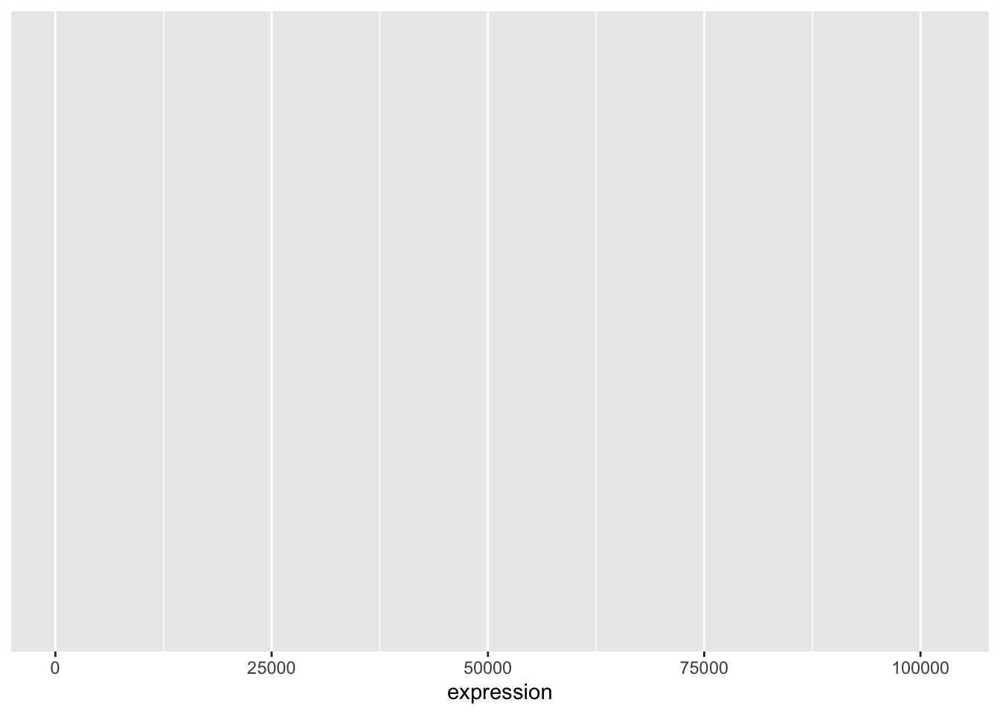
add ‘geoms’ - geometries, or graphical representations of the data in the plot (points, lines, bars). ggplot2 offers many different geoms; we will use some common ones today, including:
*`geom_point()`for scatter plots, dot plots, etc.*`geom_histogram()`for histograms*`geom_boxplot()`for, well, boxplots!*`geom_line()`for trend lines, time series, etc.
To add a geom(etry) to the plot use the + operator. Let’s use geom_histogram() first:
`stat_bin()` using `bins = 30`. Pick better value with `binwidth`.
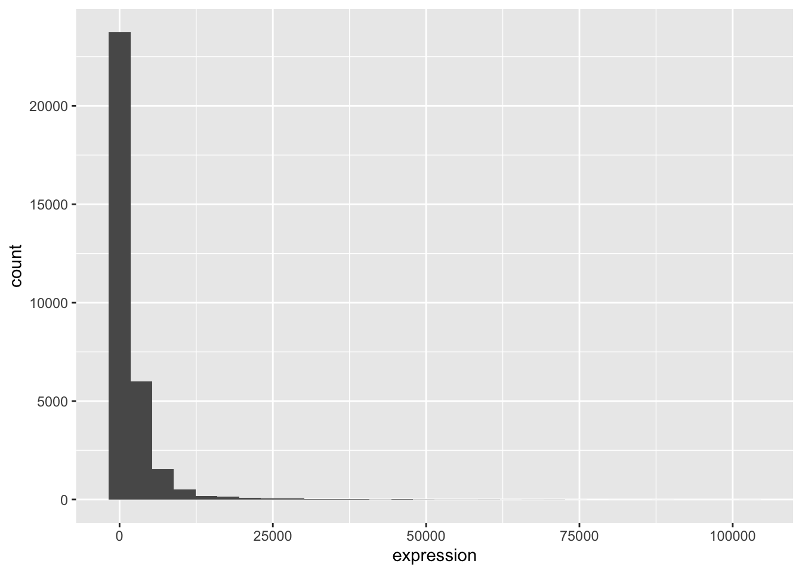
The + in the ggplot2 package is particularly useful because it allows you to modify existing ggplot objects. This means you can easily set up plot templates and conveniently explore different types of plots, so the above plot can also be generated with code like this:
# Assign plot to a variablerna_plot <-ggplot(data = rna,mapping =aes(x = expression))# Draw the plotrna_plot +geom_histogram()
`stat_bin()` using `bins = 30`. Pick better value with `binwidth`.
Challenge
You have probably noticed an automatic message that appears when drawing the histogram:
`stat_bin()` using `bins = 30`. Pick better value with `binwidth`.
Change the arguments bins or binwidth of geom_histogram() to change the number or width of the bins.
We can observe here that the data are skewed to the right. We can apply log2 transformation to have a more symmetric distribution. Note that we add here a small constant value (+1) to avoid having -Inf values returned for expression values equal to 0.
`stat_bin()` using `bins = 30`. Pick better value with `binwidth`.
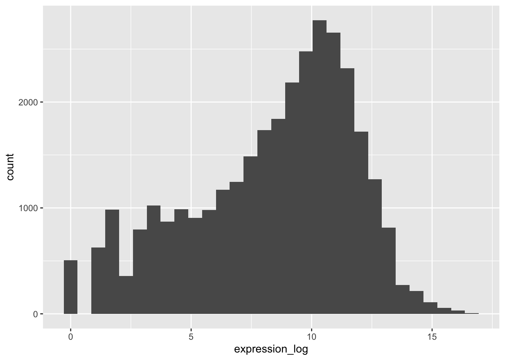
From now on we will work on the log-transformed expression values.
Challenge
Another way to visualize this transformation is to consider the scale of the observations. For example, it may be worth changing the scale of the axis to better distribute the observations in the space of the plot. Changing the scale of the axes is done similarly to adding/modifying other components (i.e., by incrementally adding commands). Try making this modification:
Represent the un-transformed expression on the log10 scale; see scale_x_log10(). Compare it with the previous graph. Why do you now have warning messages appearing?
Note
Notes
Anything you put in the ggplot() function can be seen by any geom layers that you add (i.e., these are global plot settings). This includes the x- and y-axis mapping you set up in aes().
You can also specify mappings for a given geom independently of the mappings defined globally in the ggplot() function.
The + sign used to add new layers must be placed at the end of the line containing the previous layer. If, instead, the + sign is added at the beginning of the line containing the new layer, ggplot2 will not add the new layer and will return an error message.
# This is the correct syntax for adding layersrna_plot +geom_histogram()
`stat_bin()` using `bins = 30`. Pick better value with `binwidth`.
# This will not add the new layer and will return an error messagerna_plot +geom_histogram()
`stat_bin()` using `bins = 30`. Pick better value with `binwidth`.
1.2Building your plots iteratively
We will now draw a scatter plot with two continuous variables and the geom_point() function. This graph will represent the log2 fold changes of expression comparing time 8 versus time 0, and time 4 versus time 0. To this end, we first need to compute the means of the log-transformed expression values by gene and time, then the log fold changes by subtracting the mean log expressions between time 8 and time 0 and between time 4 and time 0. Note that we also include here the gene biotype that we will use later on to represent the genes. We will save the fold changes in a new data frame called rna_fc.
`summarise()` has grouped output by 'gene', 'time'. You can override using the
`.groups` argument.
We can then build a ggplot with the newly created dataset rna_fc. Building plots with ggplot2 is typically an iterative process. We start by defining the dataset we’ll use, lay out the axes, and choose a geom:
ggplot(data = rna_fc, mapping =aes(x = time_4_vs_0, y = time_8_vs_0)) +geom_point(alpha =0.3, color ="blue")
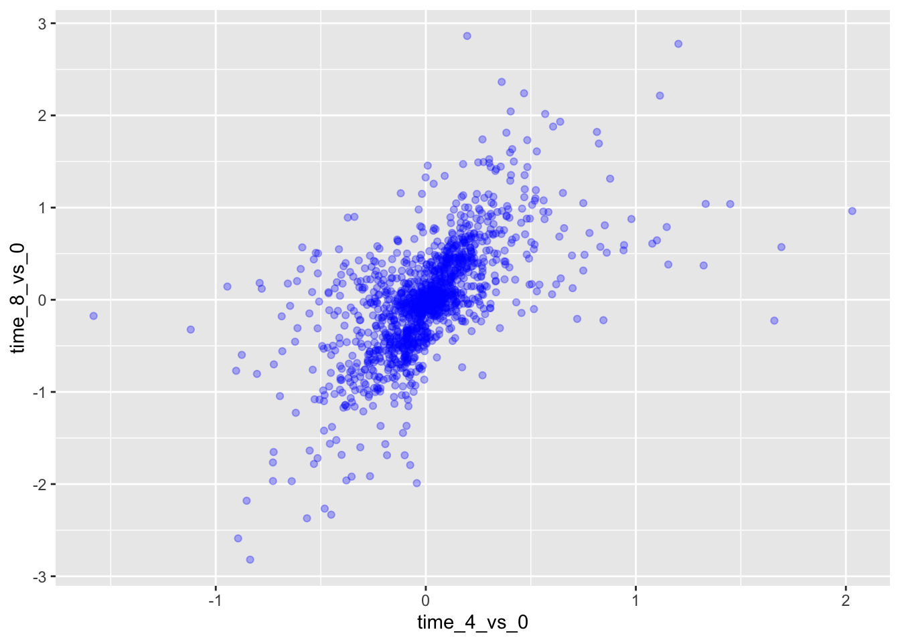
Or to color each gene in the plot differently, you could use a vector as an input to the argument color. ggplot2 will provide a different color corresponding to different values in the vector. Here is an example where we color with gene_biotype:
We can also specify the colors directly inside the mapping provided in the ggplot() function. This will be seen by any geom layers and the mapping will be determined by the x- and y-axis set up in aes().
Scatter plots can be useful exploratory tools for small datasets. For data sets with large numbers of observations, such as the rna_fc data set, overplotting of points can be a limitation of scatter plots. One strategy for handling such settings is to use hexagonal binning of observations. The plot space is tessellated into hexagons. Each hexagon is assigned a color based on the number of observations that fall within its boundaries.
To use hexagonal binning in ggplot2, first install the R package hexbin from CRAN and load it.
Then use the geom_hex() function to produce the hexbin figure.
What are the relative strengths and weaknesses of a hexagonal bin plot compared to a scatter plot? Examine the above scatter plot and compare it with the hexagonal bin plot that you created.
Challenge
Use what you just learned to create a scatter plot of expression_log over sample from the rna dataset with the time showing in different colors. Is this a good way to show this type of data?
1.3Boxplot
We can use boxplots to visualize the distribution of gene expressions within each sample:
ggplot(data = rna,mapping =aes(y = expression_log, x = sample)) +geom_boxplot()
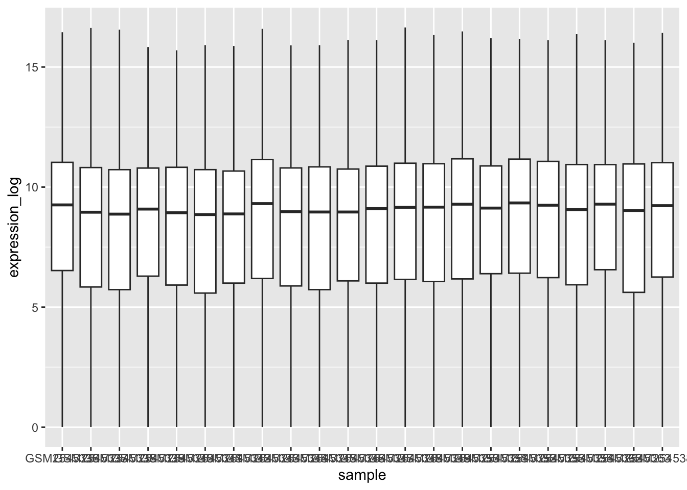
By adding points to boxplot, we can have a better idea of the number of measurements and of their distribution:
ggplot(data = rna,mapping =aes(y = expression_log, x = sample)) +geom_jitter(alpha =0.2, color ="tomato") +geom_boxplot(alpha =0)
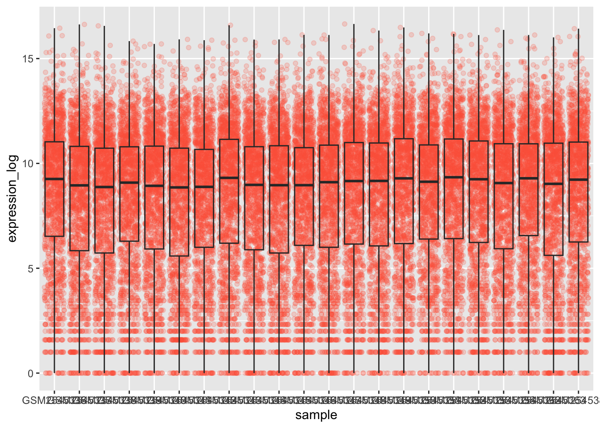
Challenge
Note how the boxplot layer is in front of the jitter layer? What do you need to change in the code to put the boxplot below the points?
You may notice that the values on the x-axis are still not properly readable. Let’s change the orientation of the labels and adjust them vertically and horizontally so they don’t overlap. You can use a 90-degree angle, or experiment to find the appropriate angle for diagonally oriented labels:
Add color to the data points on your boxplot according to the duration of the infection (time).
Hint: Check the class for time. Consider changing the class of time from integer to factor directly in the ggplot mapping. Why does this change how R makes the graph?
Challenge
Boxplots are useful summaries, but hide the shape of the distribution. For example, if the distribution is bimodal, we would not see it in a boxplot. An alternative to the boxplot is the violin plot, where the shape (of the density of points) is drawn.
Replace the box plot with a violin plot; see geom_violin(). Fill in the violins according to the time with the argument fill.
Challenge
Modify the violin plot to fill in the violins by sex.
1.4Line plots
Let’s calculate the mean expression per duration of the infection for the 10 genes having the highest log fold changes comparing time 8 versus time 0. First, we need to select the genes and create a subset of rna called sub_rna containing the 10 selected genes, then we need to group the data and calculate the mean gene expression within each group:
We can build the line plot with duration of the infection on the x-axis and the mean expression on the y-axis:
ggplot(data = mean_exp_by_time, mapping =aes(x = time, y = mean_exp)) +geom_line()
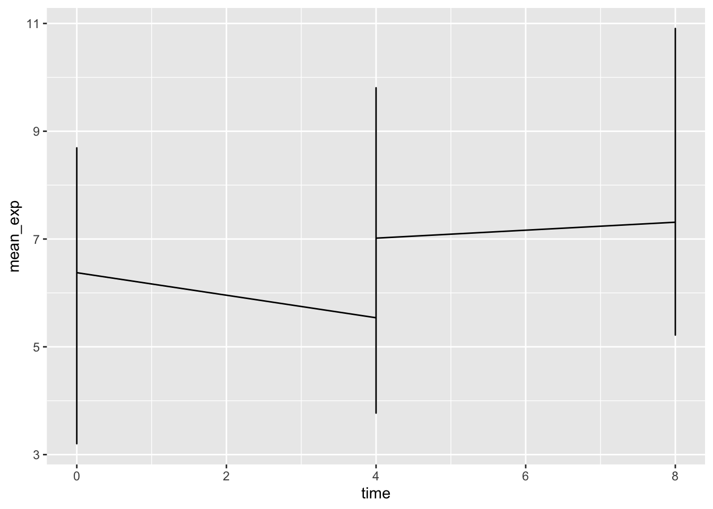
Unfortunately, this does not work because we plotted data for all the genes together. We need to tell ggplot to draw a line for each gene by modifying the aesthetic function to include group = gene:
ggplot(data = mean_exp_by_time,mapping =aes(x = time, y = mean_exp, group = gene)) +geom_line()
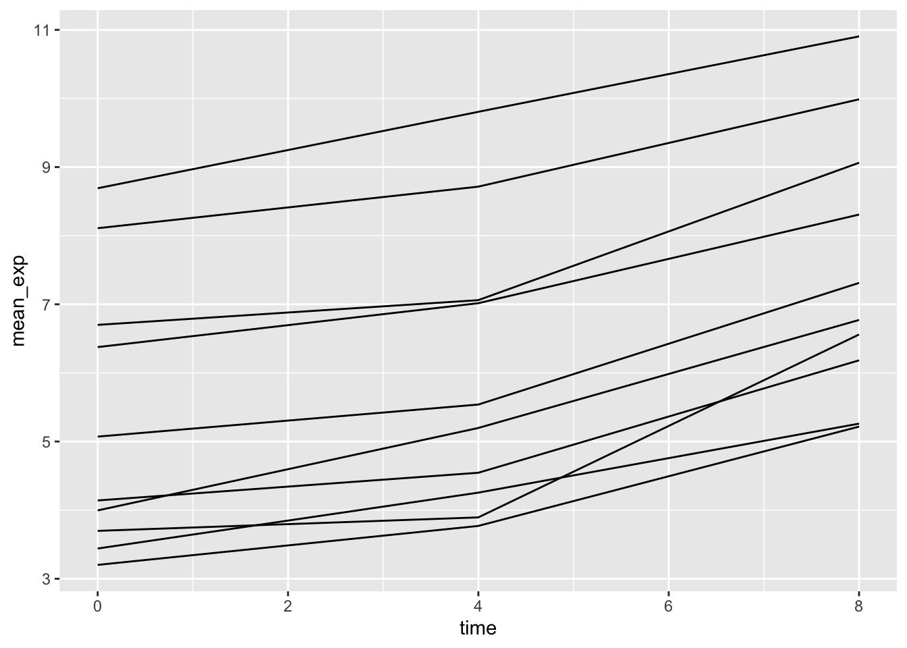
We will be able to distinguish genes in the plot if we add colors (using color also automatically groups the data):
ggplot(data = mean_exp_by_time,mapping =aes(x = time, y = mean_exp, color = gene)) +geom_line()
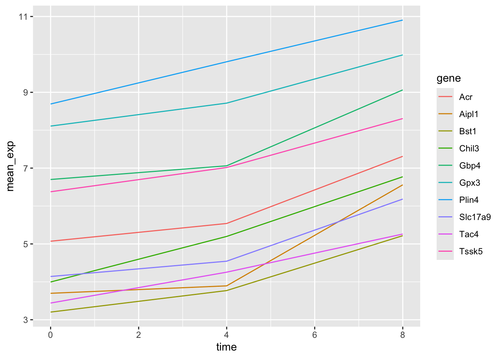
1.5Faceting
ggplot2 has a special technique called faceting that allows the user to split one plot into multiple (sub) plots based on a factor included in the dataset. These different subplots inherit the same properties (axes limits, ticks, …) to facilitate their direct comparison. We will use it to make a line plot across time for each gene:
ggplot(data = mean_exp_by_time,mapping =aes(x = time, y = mean_exp)) +geom_line() +facet_wrap(~ gene)
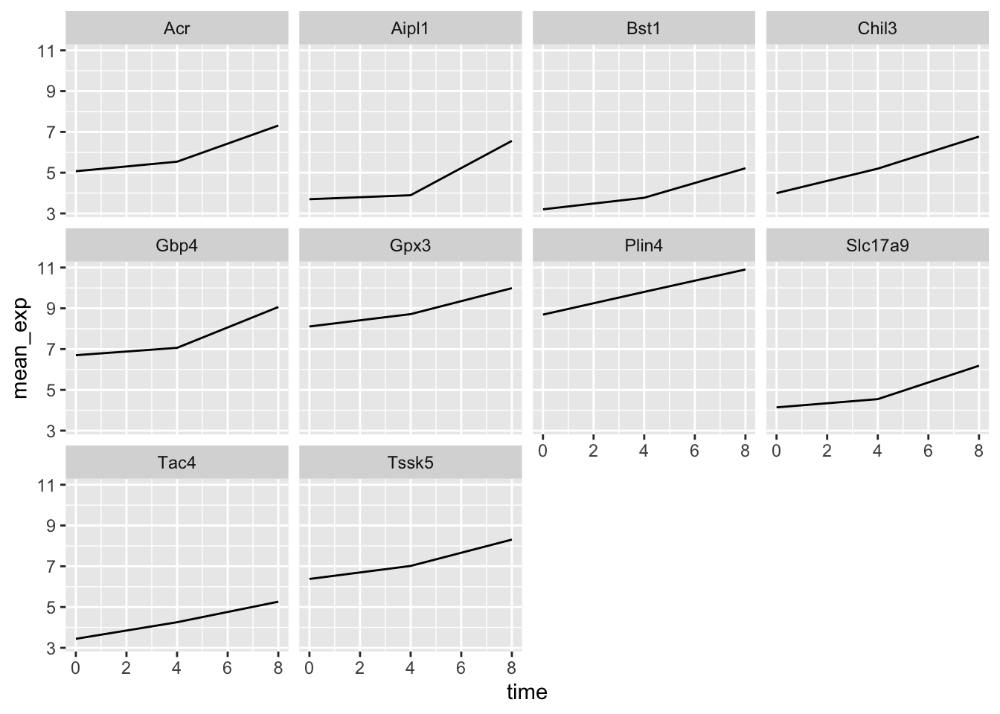
Here both x- and y-axis have the same scale for all the subplots. You can change this default behavior by modifying scales in order to allow a free scale for the y-axis:
ggplot(data = mean_exp_by_time,mapping =aes(x = time, y = mean_exp)) +geom_line() +facet_wrap(~ gene, scales ="free_y")
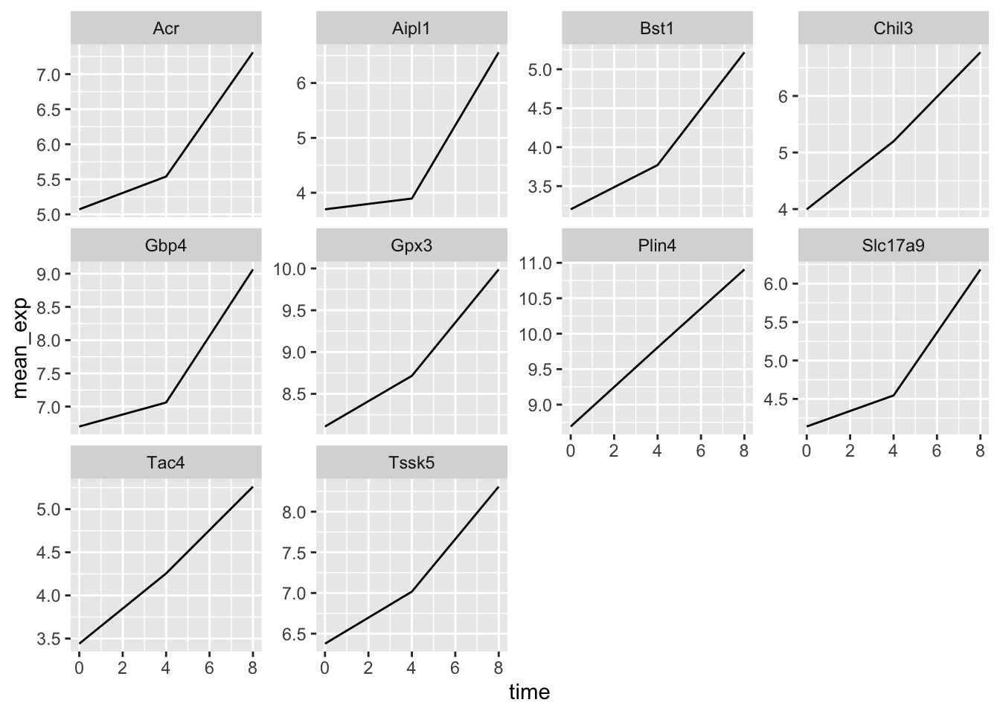
Now we would like to split the line in each plot by the sex of the mice. To do that we need to calculate the mean expression in the data frame grouped by gene, time, and sex:
mean_exp_by_time_sex <- sub_rna %>%group_by(gene, time, sex) %>%summarize(mean_exp =mean(expression_log))
`summarise()` has grouped output by 'gene', 'time'. You can override using the
`.groups` argument.
mean_exp_by_time_sex
# A tibble: 60 × 4
# Groups: gene, time [30]
gene time sex mean_exp
<chr> <int> <chr> <dbl>
1 Acr 0 Female 5.13
2 Acr 0 Male 5.00
3 Acr 4 Female 5.93
4 Acr 4 Male 5.15
5 Acr 8 Female 7.27
6 Acr 8 Male 7.36
7 Aipl1 0 Female 3.67
8 Aipl1 0 Male 3.73
9 Aipl1 4 Female 4.07
10 Aipl1 4 Male 3.72
# ℹ 50 more rows
We can now make the faceted plot by splitting further by sex using color (within a single plot):
ggplot(data = mean_exp_by_time_sex,mapping =aes(x = time, y = mean_exp, color = sex)) +geom_line() +facet_wrap(~ gene, scales ="free_y")
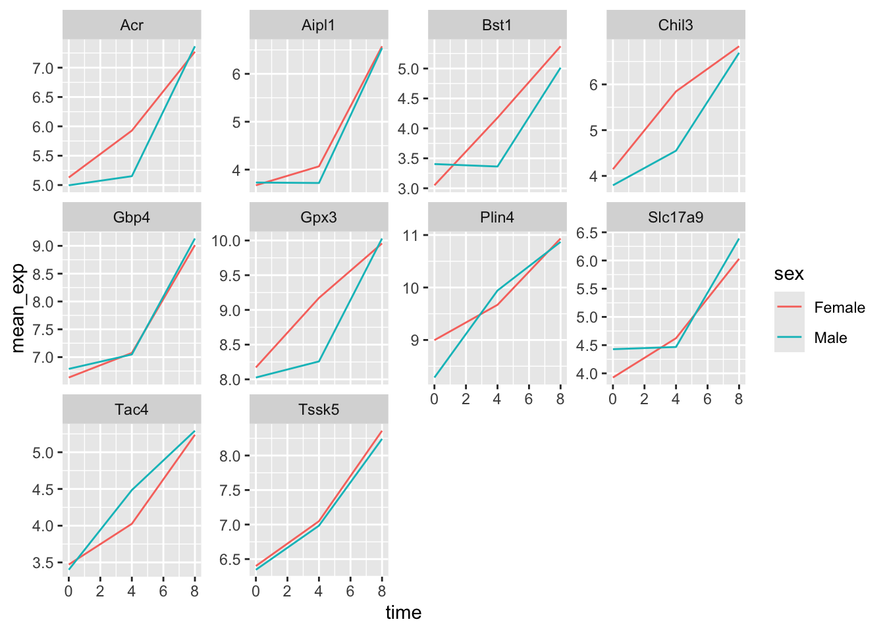
Usually plots with white background look more readable when printed. We can set the background to white using the function theme_bw(). Additionally, we can remove the grid:
ggplot(data = mean_exp_by_time_sex,mapping =aes(x = time, y = mean_exp, color = sex)) +geom_line() +facet_wrap(~ gene, scales ="free_y") +theme_bw() +theme(panel.grid =element_blank())
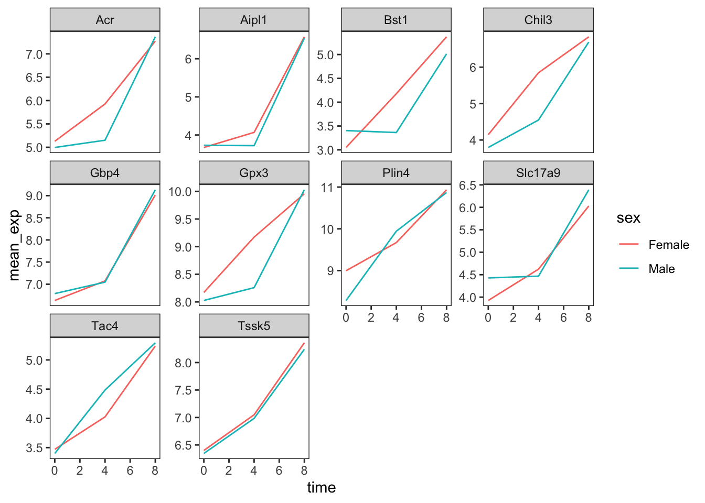
Challenge
Use what you just learned to create a plot that depicts how the average expression of each chromosome changes through the duration of infection.
The facet_wrap geometry extracts plots into an arbitrary number of dimensions to allow them to cleanly fit on one page. On the other hand, the facet_grid geometry allows you to explicitly specify how you want your plots to be arranged via formula notation (rows ~ columns; a . can be used as a placeholder that indicates only one row or column).
Let’s modify the previous plot to compare how the mean gene expression of males and females has changed through time:
# One column, facet by rowsggplot(data = mean_exp_by_time_sex,mapping =aes(x = time, y = mean_exp, color = gene)) +geom_line() +facet_grid(sex ~ .)
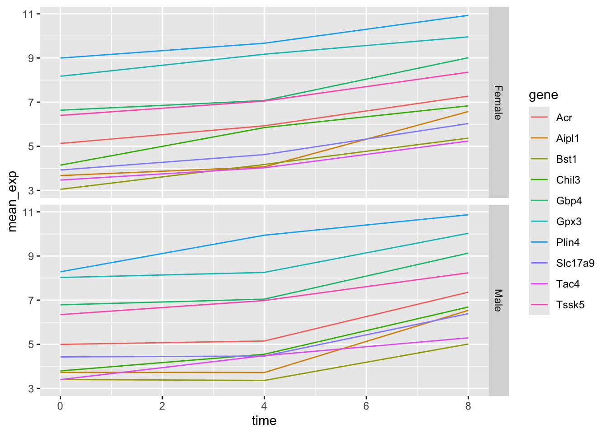
# One row, facet by columnggplot(data = mean_exp_by_time_sex,mapping =aes(x = time, y = mean_exp, color = gene)) +geom_line() +facet_grid(. ~ sex)
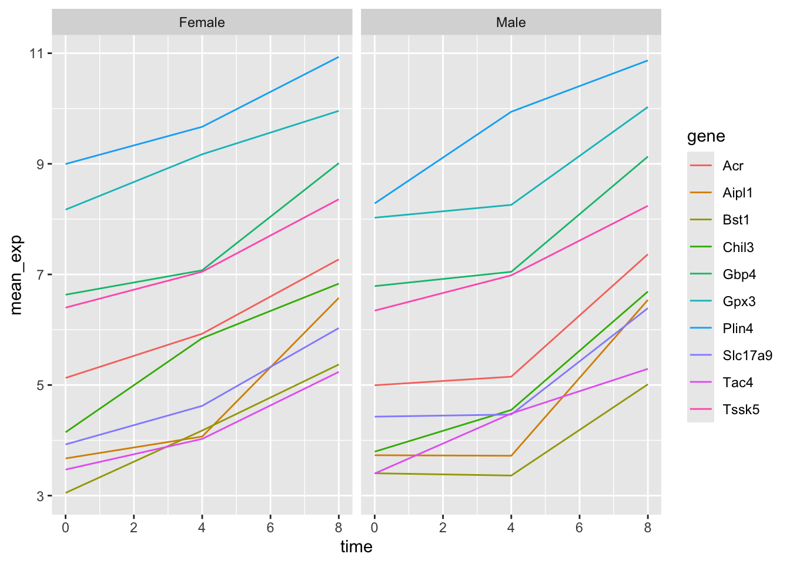
1.6ggplot2 themes
In addition to theme_bw(), which changes the plot background to white, ggplot2 comes with several other themes which can be useful to quickly change the look of your visualization. The complete list of themes is available at https://ggplot2.tidyverse.org/reference/ggtheme.html. theme_minimal() and theme_light() are popular, and theme_void() can be useful as a starting point to create a new hand-crafted theme.
The ggthemes package provides a wide variety of options (including an Excel 2003 theme). The ggplot2 extensions website provides a list of packages that extend the capabilities of ggplot2, including additional themes.
1.7Customisation
Let’s come back to the faceted plot of mean expression by time and gene, colored by sex.
Take a look at the ggplot2 cheat sheet, and think of ways you could improve the plot.
Now, we can change names of axes to something more informative than ‘time’ and ‘mean_exp’, and add a title to the figure:
ggplot(data = mean_exp_by_time_sex,mapping =aes(x = time, y = mean_exp, color = sex)) +geom_line() +facet_wrap(~ gene, scales ="free_y") +theme_bw() +theme(panel.grid =element_blank()) +labs(title ="Mean gene expression by duration of the infection",x ="Duration of the infection (in days)",y ="Mean gene expression")
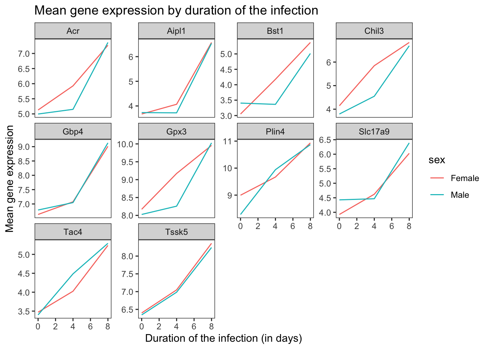
The axes have more informative names, but their readability can be improved by increasing the font size:
ggplot(data = mean_exp_by_time_sex,mapping =aes(x = time, y = mean_exp, color = sex)) +geom_line() +facet_wrap(~ gene, scales ="free_y") +theme_bw() +theme(panel.grid =element_blank()) +labs(title ="Mean gene expression by duration of the infection",x ="Duration of the infection (in days)",y ="Mean gene expression") +theme(text =element_text(size =16))
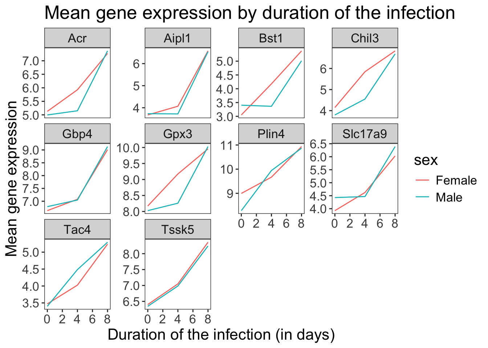
Note that it is also possible to change the fonts of your plots. If you are on Windows, you may have to install the extrafont package.
We can further customize the color of x- and y-axis text, the color of the grid, etc. We can also for example move the legend to the top by setting legend.position to "top".
ggplot(data = mean_exp_by_time_sex,mapping =aes(x = time, y = mean_exp, color = sex)) +geom_line() +facet_wrap(~ gene, scales ="free_y") +theme_bw() +theme(panel.grid =element_blank()) +labs(title ="Mean gene expression by duration of the infection",x ="Duration of the infection (in days)",y ="Mean gene expression") +theme(text =element_text(size =16),axis.text.x =element_text(colour ="royalblue4", size =12),axis.text.y =element_text(colour ="royalblue4", size =12),panel.grid =element_line(colour="lightsteelblue1"),legend.position ="top")
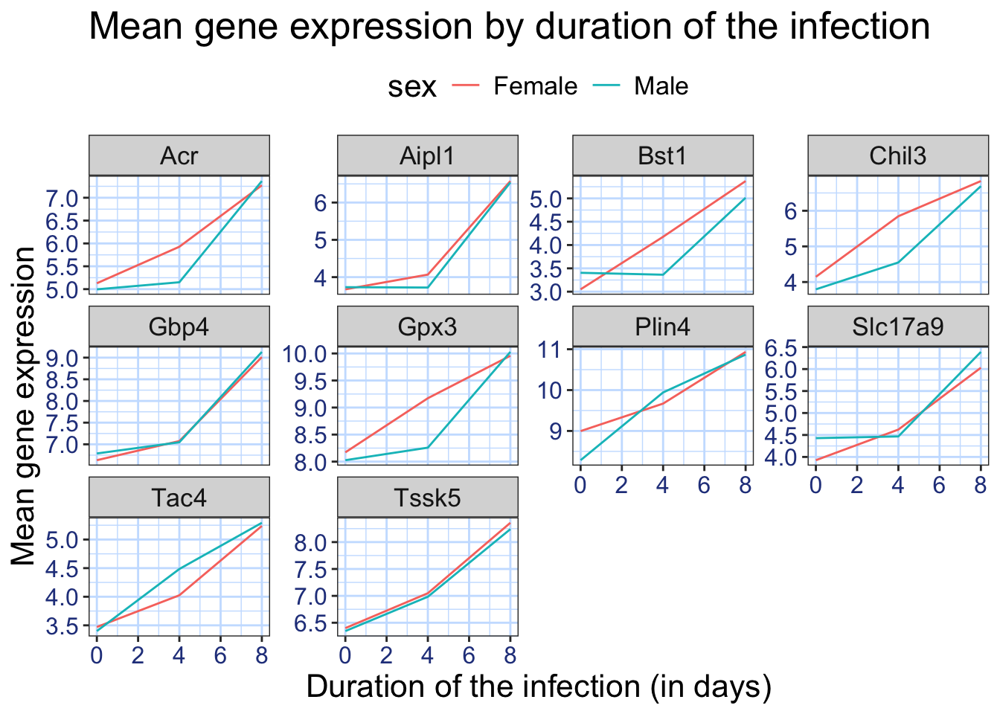
If you like the changes you created better than the default theme, you can save them as an object to be able to easily apply them to other plots you may create. Here is an example with the histogram we have previously created.
With all of this information in hand, please take another five minutes to either improve one of the plots generated in this exercise or create a beautiful graph of your own. Use the RStudio ggplot2 cheat sheet for inspiration. Here are some ideas:
See if you can change the thickness of the lines.
Can you find a way to change the name of the legend? What about its labels? (hint: look for a ggplot function starting with scale_)
Faceting is a great tool for splitting one plot into multiple subplots, but sometimes you may want to produce a single figure that contains multiple independent plots, i.e. plots that are based on different variables or even different data frames.
Let’s start by creating the two plots that we want to arrange next to each other:
The first graph counts the number of unique genes per chromosome. We first need to reorder the levels of chromosome_name and filter the unique genes per chromosome. We also change the scale of the y-axis to a log10 scale for better readability.
rna$chromosome_name <-factor(rna$chromosome_name,levels =c(1:19,"X","Y"))count_gene_chromosome <- rna %>%select(chromosome_name, gene) %>%distinct() %>%ggplot() +geom_bar(aes(x = chromosome_name), fill ="seagreen",position ="dodge", stat ="count") +labs(y ="log10(n genes)", x ="chromosome") +scale_y_log10()count_gene_chromosome
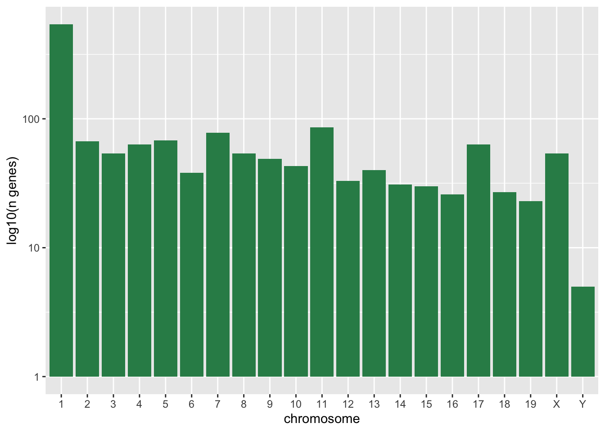
Below, we also remove the legend altogether by setting the legend.position to "none".
The patchwork package provides an elegant approach to combining figures using the + to arrange figures (typically side by side). More specifically the | explicitly arranges them side by side and / stacks them on top of each other.
install.packages("patchwork")
The downloaded binary packages are in
/var/folders/6v/qms_hkh14rqbc_q9c29yjk3m0000gn/T//RtmpRcjcli/downloaded_packages
library("patchwork")
Warning: package 'patchwork' was built under R version 4.3.3
count_gene_chromosome + exp_boxplot_sex
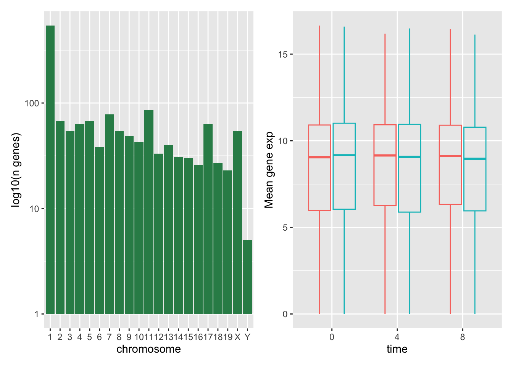
## or count_gene_chromosome | exp_boxplot_sex
count_gene_chromosome / exp_boxplot_sex
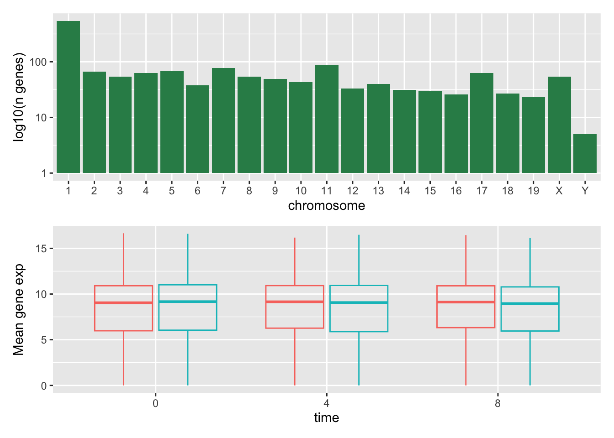
We can combine further control the layout of the final composition with plot_layout to create more complex layouts:
In addition to the ncol and nrow arguments, used to make simple arrangements, there are tools for constructing more complex layouts.
1.9Exporting plots
After creating your plot, you can save it to a file in your favorite format. The Export tab in the Plot pane in RStudio will save your plots at low resolution, which will not be accepted by many journals and will not scale well for posters.
Instead, use the ggsave() function, which allows you easily change the dimension and resolution of your plot by adjusting the appropriate arguments (width, height and dpi).
Make sure you have the fig_output/ folder in your working directory.
my_plot <-ggplot(data = mean_exp_by_time_sex,mapping =aes(x = time, y = mean_exp, color = sex)) +geom_line() +facet_wrap(~ gene, scales ="free_y") +labs(title ="Mean gene expression by duration of the infection",x ="Duration of the infection (in days)",y ="Mean gene expression") +guides(color=guide_legend(title="Gender")) +theme_bw() +theme(axis.text.x =element_text(colour ="royalblue4", size =12),axis.text.y =element_text(colour ="royalblue4", size =12),text =element_text(size =16),panel.grid =element_line(colour="lightsteelblue1"),legend.position ="top")ggsave("fig_output/mean_exp_by_time_sex.png", my_plot, width =15,height =10,create.dir =TRUE)# This also works for grid.arrange() plotscombo_plot <-grid.arrange(count_gene_chromosome, exp_boxplot_sex,ncol =2, widths =c(4, 6))
Note: The parameters width and height also determine the font size in the saved plot.
1.10Other packages for visualisation
ggplot2 is a very powerful package that fits very nicely in our tidy data and tidy tools pipeline. There are other visualization packages in R that shouldn’t be ignored.
1.10.1 Base graphics
The default graphics system that comes with R, often called base R graphics is simple and fast. It is based on the painter’s or canvas model, where different output are directly overlaid on top of each other (see figure @ref(fig:paintermodel)). This is a fundamental difference with ggplot2 (and with lattice, described below), that returns dedicated objects, that are rendered on screen or in a file, and that can even be updated.
par(mfrow =c(1, 3))plot(1:20, main ="First layer, produced with plot(1:20)")plot(1:20, main ="A horizontal red line, added with abline(h = 10)")abline(h =10, col ="red")plot(1:20, main ="A rectangle, added with rect(5, 5, 15, 15)")abline(h =10, col ="red")rect(5, 5, 15, 15, lwd =3)
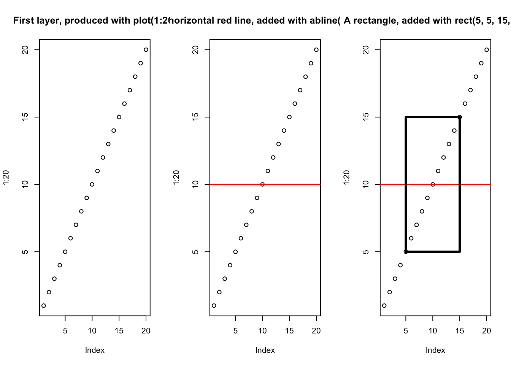
Another main difference is that base graphics’ plotting function try to do the right thing based on their input type, i.e. they will adapt their behaviour based on the class of their input. This is again very different from what we have in ggplot2, that only accepts dataframes as input, and that requires plots to be constructed bit by bit.
par(mfrow =c(2, 2))boxplot(rnorm(100),main ="Boxplot of rnorm(100)")boxplot(matrix(rnorm(100), ncol =10),main ="Boxplot of matrix(rnorm(100), ncol = 10)")hist(rnorm(100))hist(matrix(rnorm(100), ncol =10))
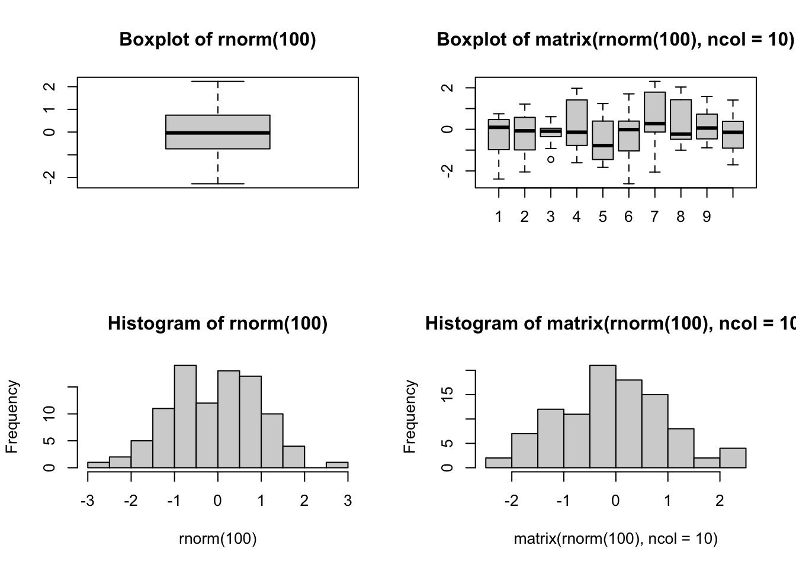
The out-of-the-box approach in base graphics can be very efficient for simple, standard figures, that can be produced very quickly with a single line of code and a single function such as plot, or hist, or boxplot, … The defaults are however not always the most appealing and tuning of figures, especially when they become more complex (for example to produce facets), can become lengthy and cumbersome.
1.10.2 The lattice package
The lattice package is similar to ggplot2 in that is uses dataframes as input, returns graphical objects and supports faceting. lattice however isn’t based on the grammar of graphics and has a more convoluted interface.
A good reference for the lattice package is @latticebook.